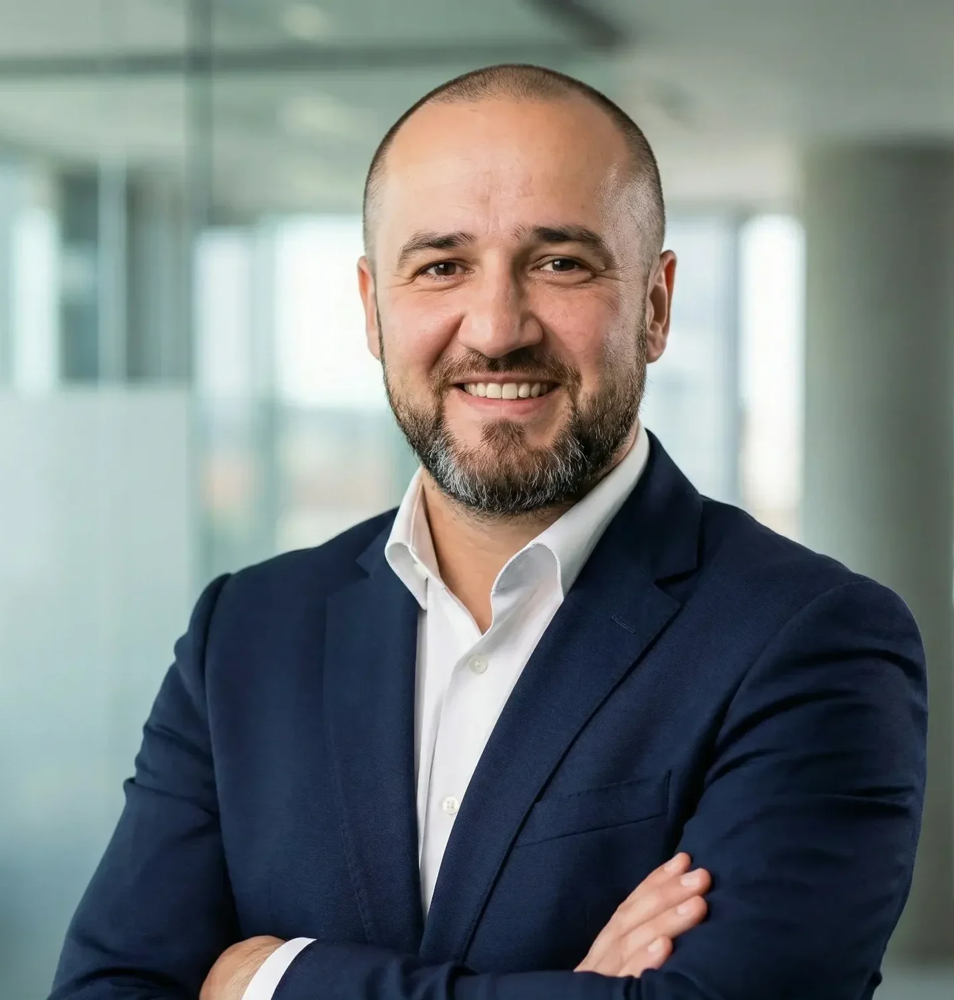
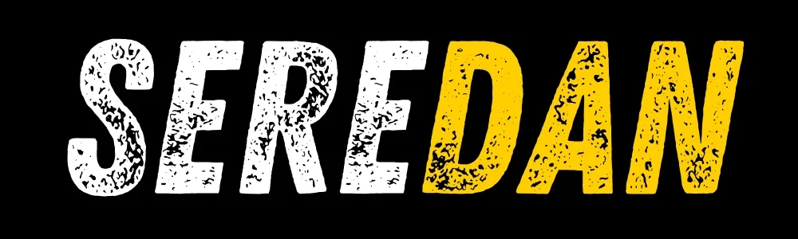
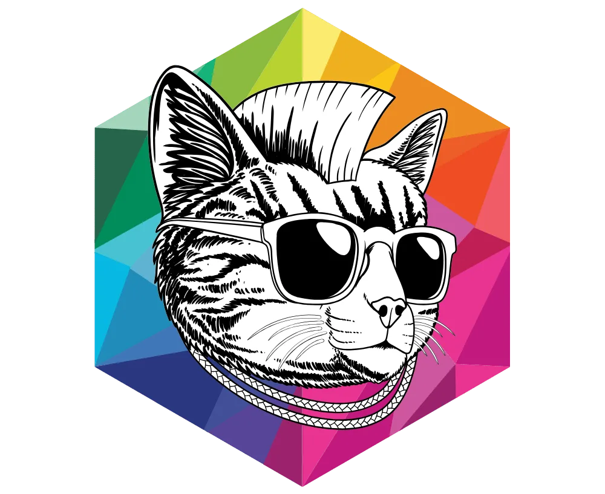
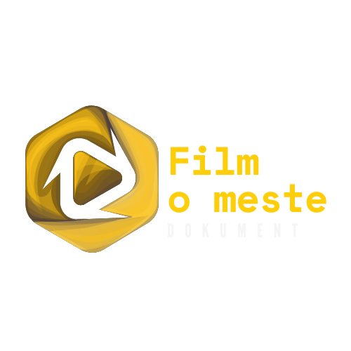
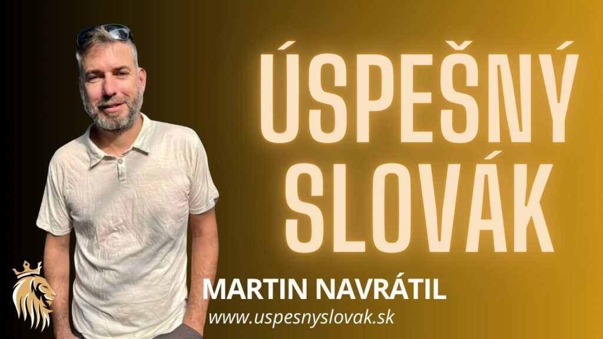

Značky a stratégia
Audit, stratégia a kreatívny koncept. Video neriešim ako ozdobu, ale ako nástroj, ktorý plní biznisový cieľ: nábor, predaj alebo budovanie mena v regióne.
Ivan JačekProjektový režisér a zakladateľ Buduj Značku, ex-manažér IDC Holding
Roky som v IDC Holding viedol tím približne 80 ľudí a projekty v hodnote státisícov eur. Dnes túto biznisovú optiku vnášam do videa a digitálnej stratégie: budujem značky, prepájam samosprávy s firmami a organizujem komunity.

Stratégia, obsah, komunita a technológie v jednom. Takto vyzerá moja práca.
Audit, stratégia a kreatívny koncept. Video neriešim ako ozdobu, ale ako nástroj, ktorý plní biznisový cieľ: nábor, predaj alebo budovanie mena v regióne.
Od virálnych Reels po firemné filmy a eventy. Obsah, ktorý ľudí buď vzdeláva, alebo baví. K tomu podcast Seredan a dokumentárny cyklus Film o meste.
Prepájam samosprávy s firmami (B2G). Developerom a korporátom pomáham stať sa skutočnou súčasťou komunity, vo Filme o meste cez hodnotný obsah.
Organizujem stretnutia podnikavcov, moderujem a prednášam. Komunita vzniká tam, kde sa ľudia pravidelne stretávajú.
Učím firmy a živnostníkov, ako technicky aj strategicky zvládnuť sociálne siete, aby ich obsah prinášal výsledky aj bez externej agentúry. K tomu 60-hodinový program o digitálnom marketingu a AI.
Pomáham firmám zavádzať automatizáciu a umelú inteligenciu. Cez SystemX vyvíjam softvér na mieru.
Spolupráce a klienti
Šesť projektov, ktoré som vymyslel a vediem. Otvor ktorýkoľvek a pozri, ako funguje a komu pomáha.

Spoluzakladateľ
Lokálne médium zo Serede: rozhovory, články, reportáže a podcast o ľuďoch, firmách a dianí v meste.

Zakladateľ a kreatívny stratég
Kreatívno-strategická agentúra, ktorá spája marketing, réžiu a storytelling. Firemné videá, fotografie, dokumenty a workshopy.

Zakladateľ
Dokumentárny cyklus o slovenských mestách. Po pilotnom filme o Seredi vznikajú filmy o Senci, Galante a Šali.
Autor, organizátor a prednášajúci
Komunita lokálnych podnikateľov, živnostníkov a freelancerov. Neformálne stretnutia v Seredi od leta 2025, vstup je voľný.

Projekt Buduj Značku
Motivačný dokumentárny formát o životných cestách výnimočných Slovákov. Hosťami boli gitarista Jimi Cimbala, cestovateľ Martin Navrátil, marketér Filip Kuna, thajboxerka Monika Chochlíková a diaľková plavkyňa Soňa Rebrová.
Zakladateľ a konateľ
Softvér a webové systémy na mieru: objednávkové a rezervačné systémy, fakturácia a firemné portály.
Rôzne projekty slúžia rôznym ľuďom. Nájdi sa a otvor, čo ti sedí.
Viditeľnosť cez video a obsah, workshopy o marketingu a AI a softvér na mieru.
Firemné videá, employer branding, inštruktážne videá na zaškoľovanie a B2B systémy.
Dokumentárne filmy o meste, lokálne médium a portály na mieru.
Komunita, v ktorej sa podnikatelia radia a spolupracujú, a médium, ktoré ich predstaví.
Príbehy ľudí a miest, rozhovory a inšpirácia.
Ako sa robí biznis, čo dnes dokáže umelá inteligencia a ako spolupracovať s verejným sektorom. Skúsenosti z mojich projektov.
Pekné video ešte nie je značka. Značka vzniká, keď stratégia, obsah a výsledky ťahajú rovnakým smerom.
AI už nie je len pre veľké firmy. Kde pomáha hneď, čo nenahradí a ako s ňou začať bez rizika.
Mestá a firmy často hovoria o spolupráci, no chýba im spoločný projekt. Film o meste je jeden zo spôsobov, ako ho vytvoriť.
Hotová platforma je rýchly štart. Softvér na mieru dáva nezávislosť. Ako sa rozhodnúť, čo sedí vašej firme.
Komunita nevzniká z prezentácií. Vzniká z pravidelných stretnutí, v ktorých sa ľudia navzájom radia a spolupracujú.
Máte projekt, spoluprácu alebo nápad? Napíšte mi alebo zavolajte.
Cookies a meranie návštevnosti
Ak súhlasíte, použijem Google Analytics (cez Google Tag Manager) na anonymné meranie návštevnosti. Bez vášho súhlasu sa nič z Googlu nenačíta.
Viac informácií